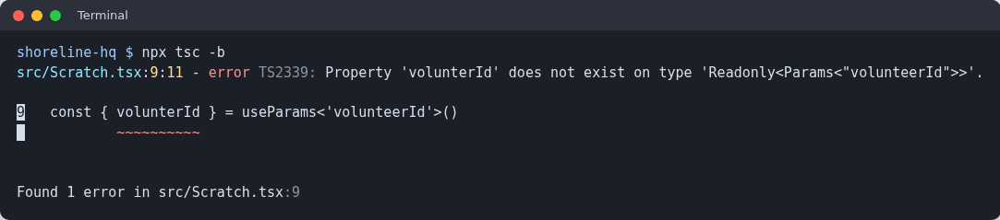
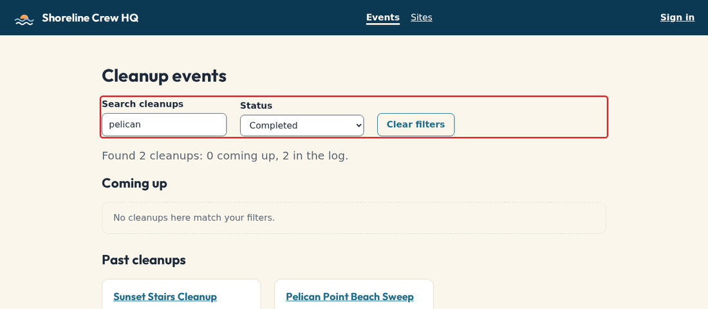
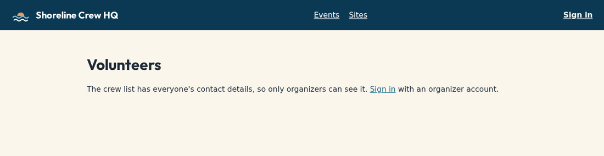
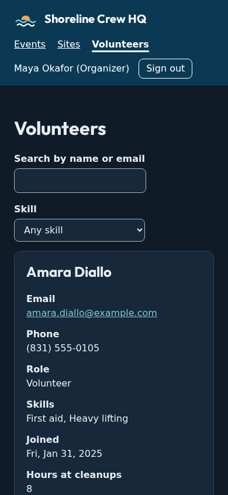

🔗 Lesson 6.2: Search Params, Nested Routes and Typed Navigation
At the end of the last lesson you searched the events page for "pelican" and reloaded: the search was gone. The router knows which page you are on, but not what you were looking at on it. Today the address carries that too. The events filters move into the address, so a filtered list survives a reload, works with Back and can be sent to another organizer. Then the HQ gets the page its header has been missing since Lesson 6.1: the crew list, with a search, a skill filter and page numbers in the address, and each volunteer's details in a nested route beside the list. Along the way you will see what React Router 8 can and cannot check for you when you build a link.
🎯 Learning Objectives
By the end of this lesson, you will be able to:
- Decide which state belongs in the address and which belongs in components
- Read search params with
useSearchParamsand turn theirstring | nullvalues into your own types with a type predicate - Change search params without losing the others, and choose between a new history entry and
replace(plusflushSyncfor a text box) - Nest routes so a child page renders inside its parent's
<Outlet />, with an index route for "nothing chosen yet" - Build relative links that keep the current search, and page through a list with links instead of buttons
- Type route parameters with
useParams<'name'>()and explain whathref()andgeneratePath()check in data mode
📦 Code for this lesson
Starting code: lesson-22-start.zip · Finished code: lesson-22-end.zip. Each folder has a README with the commands to run it. Copy .env.example to .env.local in shoreline-hq before npm run dev.
In This Lesson
🗺️ The Address Is State Too
Since Lesson 3.4 the events page has kept its search text and status filter in useState. Component state lives in the memory of one browser tab. Reload, and it starts from its default again; copy the address to another organizer, and they get the unfiltered list; press Back after changing the status, and you leave the page instead of undoing the change. For a filter, all three are wrong. People expect a filtered list to be something they can keep and pass on.
An address has room for this. Everything after the ? is the query string, a list of name and value pairs called search params (or query parameters):
Part of http://localhost:5173/events?q=pelican&status=completed | What it is | Who reads it |
|---|---|---|
/events | The path | The router, to choose the page (Lesson 6.1) |
?q=pelican&status=completed | The query string: two search params, joined by & | The page, to decide what to show |
💡 Mental model: the notice on the harbor board
When the crew wants everyone looking at the same thing, they do not tell each person separately; they pin a notice at the harbor: "Saturday, Pelican Point, completed cleanups only". Anyone who reads the notice, today or next week, sees the same view. State in useState is what one person remembers. State in the address is the notice: whoever opens the link, reloads it or comes back to it with Back reads the same thing.
Not everything belongs on the notice. A useful test: would someone want to bookmark it or send it?
| Good in the address | Better in components |
|---|---|
| Search text and filters (the events search, a skill) | Whether a dialog is open, what is being typed into a form |
| The page number of a long list | Hover and focus, animations, a "Show details" toggle |
| Sorting, the selected tab of a report | Check-in marks before they are saved (the desk's reducer) |
Which item is open (better still as a path: /volunteers/v16) | Anything secret: passwords, tokens, personal data. Addresses end up in browser history, server logs and screenshots |
Why this matters: "send me the link" is how teams share what they are looking at, and an app whose filters survive a reload simply feels trustworthy. It also removes a class of bugs, because there is one place the filters live instead of a copy in state that can disagree with the address.
🔎 Reading Search Params
Browsers already have a class for query strings, URLSearchParams. It is not part of React or React Router, so what you learn here also works in plain scripts and in Node:
| Method | On ?q=pelican&status=completed | Type |
|---|---|---|
params.get('q') | 'pelican' | string | null (null when the name is missing) |
params.has('page') | false | boolean |
params.getAll('skill') | [] (useful when a name repeats: ?skill=a&skill=b) | string[] |
params.set('q', 'jetty') / params.delete('q') | Change the object itself | void |
params.toString() | 'q=pelican&status=completed' (no ?; spaces become +) | string |
React Router hands you the current ones with a Hook that looks like useState: const [searchParams, setSearchParams] = useSearchParams(). The first item is a URLSearchParams; the second changes the address (the next section). Unlike useState, the value lives in the address, so a reload, a shared link or the Back button all give the page the same value.
Every value is a string, or missing
The events page wants a StatusFilter (EventStatus | 'all', from Lesson 3.4). The address can only offer text. Try the obvious line:
import { useSearchParams } from 'react-router'
import type { StatusFilter } from './components/EventFilters.tsx'
export function StatusLine() {
const [searchParams] = useSearchParams()
const status: StatusFilter = searchParams.get('status') ?? 'all'
return <p>Status: {status}</p>
}Expected output
src/Scratch.tsx:6:9 - error TS2322: Type 'string' is not assignable to type 'StatusFilter'.
6 const status: StatusFilter = searchParams.get('status') ?? 'all'
~~~~~~
Found 1 error in src/Scratch.tsx:6TypeScript is right to refuse. get returns string | null; ?? 'all' removes the null but leaves string, and nothing stops someone from typing ?status=banana into the address bar. Treat the address like any other input from outside the app, the way Lesson 2.4 treated the API's JSON: check it, then trust it. You already have the checks. isEventStatus is a type predicate (value is EventStatus), so one small generic function can read any parameter whose allowed values have a predicate:
// The part of the address after the ?: every value is a string (or missing), whatever we hoped
/** One search parameter, if it is one of the values we allow; undefined when it is missing or wrong */
export function readParam<T extends string>(
params: URLSearchParams,
name: string,
isT: (value: string) => value is T,
): T | undefined {
const value = params.get(name)
return value !== null && isT(value) ? value : undefined
}TypeScript infers T from the predicate you pass: with isEventStatus the result is EventStatus | undefined, with isSkill it is Skill | undefined. Then ?? 'all' supplies the default, and the line compiles because every possible value is now a StatusFilter:
const query = searchParams.get('q') ?? ''
const status: StatusFilter = readParam(searchParams, 'status', isEventStatus) ?? 'all'Measured: opening /events?status=banana showed "All statuses" in the menu and all 15 cleanups, and the only request to the API was /events?perPage=50. The bad value never left the page. A page number gets the same treatment in readPageNumber: anything that is not a whole number above 0 means page 1.
✍️ Writing Search Params
setSearchParams takes the new search params (an object, a string or a URLSearchParams), or a function that receives a copy of the current ones and returns the next. It then navigates to the same path with the new query string. A second argument holds the navigation options.
Changing one filter must keep the others: choosing a status must not forget the search. So the HQ always starts from the current params and changes one name. A small helper does that, and removes the name when the value is empty, so defaults stay out of the address (/events, not /events?q=&status=all):
/** A copy of params with one value set; an empty value removes the parameter */
export function withParam(params: URLSearchParams, name: string, value: string): URLSearchParams {
const next = new URLSearchParams(params)
if (value === '') {
next.delete(name)
} else {
next.set(name, value)
}
return next
}It copies with new URLSearchParams(params) instead of calling set on the object from the Hook. That object is the router's view of the current address; changing it changes nothing on screen (React never hears about it), the same "copy, don't mutate" rule as React state.
A new history entry, or replace the current one?
Every navigation adds an entry to the browser's history unless you pass replace: true. Which you want depends on what people would expect Back to do:
| Change | Option | Back then… |
|---|---|---|
| Choosing a status, the next page of a list | (default: push) | Undoes the change. Measured: from ?q=pelican&status=completed, Back went to ?q=pelican, with the menu on "All statuses" and "pelican" still in the box |
| Typing a search, letter by letter | replace: true | Skips the letters. Measured: typing "pelican" added 0 history entries; the first letter even replaced the plain /events entry, so Back from the search went to the page before Events |
The arrows go in one direction. The page never stores the filters; it reads them from the address on every render and asks the address to change. That is the same idea as a controlled input (Lesson 3.4), with the address as the state.
Router updates are low priority: flushSync for the search box
React Router 8 applies its state changes inside React's startTransition, which marks them as "can wait". For a click on a link that is exactly right. For a text box whose value comes from the address, it is not: React shows the old value until the transition lands, and the browser loses track of where you were typing. The Common Mistakes section has the measurements. The fix is the flushSync: true option, which applies that one update straight away (it needs RouterProvider from react-router/dom, which the HQ already uses):
// Typing: replace the history entry (Back skips the letters), and update the box right away
function setQuery(next: string) {
setSearchParams((current) => withParam(current, 'q', next), {
replace: true,
flushSync: true,
})
}Two things did not need to change. The search still reaches the API through useDebouncedValue (Lesson 4.2), so typing "pelican" still sends one request, not seven. And AppLayout's focus effect from Lesson 6.1 runs only when the path changes, so the focus stays in the search box while the query string changes (measured: the active element was still #event-search after typing).
🪆 Nested Routes and Outlets
In Lesson 6.1 every page was a child of the layout route, rendered at AppLayout's <Outlet />. Any route can have children, not just the layout. The crew page uses that: /volunteers shows the search and the list, and /volunteers/v16 shows the same search and list plus one person's details. Instead of two pages that both draw the list, the details become a child route of the list page:
{
path: 'volunteers',
element: <VolunteersPage />,
// Nested routes: they render inside VolunteersPage, at its <Outlet />
children: [
{ index: true, element: <p>Pick a name from the list to see their details.</p> },
{ path: ':volunteerId', element: <VolunteerPage /> },
],
},VolunteersPage renders <Outlet /> where the details go. On /volunteers the index child fills it with a short hint (an index route is "the page at the parent's own address", here "nobody chosen yet"); on /volunteers/v16 the :volunteerId child fills it with VolunteerPage. The child's path is relative, like every child path: ':volunteerId' inside 'volunteers' matches /volunteers/v16.
Two consequences are worth seeing in the browser. Moving from one volunteer to another keeps VolunteersPage mounted, so its list does not load again: measured, clicking Lily Tran sent one request, /volunteers/v16, and nothing for the list. And the header's Volunteers NavLink stays current, because /volunteers/v16 is below /volunteers.
Relative links, and keeping the search on them
Links resolve relative to the route that renders them, not to the address in the bar. Inside VolunteersPage, <NavLink to="v16"> means "child v16 of this route", so it points to /volunteers/v16 whether the address is /volunteers or /volunteers/v20. That is what makes nested pages easy to move: the list never spells out its own path.
A path is not the whole address, though. A link with only a path drops the query string, and on page 2 of the list that sends people back to page 1 (Common Mistakes, measured). The to prop also takes an object with pathname and search, so the list passes its current search along:
// Each name links to the nested route; the ?search goes along, so the list stays as it is
function renderVolunteer(volunteer: Volunteer) {
return (
<NavLink to={{ pathname: volunteer.id, search: searchParams.toString() }}>
{volunteer.name}
</NavLink>
)
}It is a NavLink on purpose: on /volunteers/v16 it gives Lily Tran's link aria-current="page", which the page's CSS makes bold, so everyone can tell whose card is open. The Pagination links do the opposite trick: to={{ search: … }} with no pathname keeps the current path and changes only the query, so Next page from /volunteers/v16?page=2 went to /volunteers/v16?page=3 (measured). The card stays open while you page through the list.
🛑 Hiding a page is not protecting it
The crew list has phone numbers and email addresses, so VolunteersPage shows it only to organizers, and the header shows the Volunteers link only to them. That is good manners, not security: anyone can type /volunteers. The real guard is the API. Measured: GET /api/volunteers without a token answered 401 "Sign in first.", and with Theo's volunteer token 403 "Only organizers can do that." Lesson 6.3 turns the page into a protected route that sends people to the sign-in page; the API's answer stays the part that keeps the data safe.
🧭 Typed Navigation
Lesson 6.1 ended with a question: can TypeScript catch a typo in an address? Three tools are worth knowing, and they check different things.
1. Name the parameters you read: useParams<'volunteerId'>()
useParams() without a type argument returns Readonly<Params<string>>: any name at all is allowed, each string | undefined. Pass the name you expect, and other names become errors:
import { useParams } from 'react-router'
export function Untyped() {
const { volunterId } = useParams() // typo: still compiles, always undefined
return <p>{volunterId}</p>
}
export function Typed() {
const { volunterId } = useParams<'volunteerId'>()
return <p>{volunterId}</p>
}
useParams<'volunteerId'>() gets an error; the untyped call compiles and would quietly read undefined.Expected output
src/Scratch.tsx:9:11 - error TS2339: Property 'volunterId' does not exist on type 'Readonly<Params<"volunteerId">>'.
9 const { volunterId } = useParams<'volunteerId'>()
~~~~~~~~~~
Found 1 error in src/Scratch.tsx:9Line 4 has the same typo and no error: it would read undefined forever. The value is still string | undefined (TypeScript still cannot see which route rendered the component), so the HQ's pages keep their narrowing check. The type argument is a promise you make, "this component sits under a route with :volunteerId", and TypeScript holds every line of the component to it.
2. href(): typed in framework mode only
React Router 8 exports href(path, params), and its documentation shows it catching typos. That checking needs a list of every route, which React Router generates in framework mode (the routes file plus the Vite plugin from Lesson 6.1's mode table). In data mode nobody generates that list, so href accepts any string. Measured in the HQ:
import { generatePath, href } from 'react-router'
// href(): checked only in framework mode, where React Router generates the list of routes
export const typoInPath = href('/volunters/:volunteerId', { volunteerId: 'v04' })
export const missingValue = href('/volunteers/:volunteerId')
// generatePath(): reads the parameter names from the pattern you pass
export const fine = generatePath('/volunteers/:volunteerId', { volunteerId: 'v04' })
export const typoInName = generatePath('/volunteers/:volunteerId', { volunterId: 'v04' })Expected output
src/Scratch.tsx:9:68 - error TS2741: Property 'volunteerId' is missing in type '{ volunterId: string; }' but required in type '{ [x: string]: string | null | undefined; volunteerId: string; }'.
9 export const typoInName = generatePath('/volunteers/:volunteerId', { volunterId: 'v04' })
~~~~~~~~~~~~~~~~~~~~~
Found 1 error in src/Scratch.tsx:9One error, and it is on line 9 (generatePath, below). Lines 4 and 5 compile: a misspelled path and a missing value both pass. At run time the first one returned /volunters/v04, a link to "Page not found", and the second threw "Path '/volunteers/:volunteerId' requires param 'volunteerId' but it was not provided". So in the HQ, href() adds no safety; do not let its name convince you otherwise.
3. generatePath(): reads the names from the pattern
generatePath('/volunteers/:volunteerId', { volunteerId }) works in every mode. Its type reads the parameter names out of the string you pass (with template literal types: generics that take a string apart, a step past Lesson 2.3), so a misspelled name is the TS2741 above. It also encodes the value for a path segment: 'v 04' became v%2004. It cannot know whether the path exists in your router; only one list of routes can know that.
| Tool | Catches a misspelled parameter name | Catches a path that is not a route | In the HQ |
|---|---|---|---|
useParams<'volunteerId'>() | Yes, where you read it | No | VolunteerPage, EventPage |
generatePath(pattern, params) | Yes, where you build a link | No | Optional (FAQ: a paths module) |
href(path, params) | Only in framework mode | Only in framework mode | Not used |
Relative links (to={volunteer.id}) | Nothing to misspell | Resolved against the route that renders the link | The crew list |
Being honest about what a type checks is a skill in itself. A name that sounds safe is not a guarantee; a quick experiment like the one above (a deliberate typo, then npx tsc -b) tells you in a minute what a library really promises.
⚠️ Common Mistakes
⚠️ A search box that eats letters
Leave out flushSync: true and everything compiles and lints cleanly. Measured on the dev server without it: typing "pelcan", moving the cursor three places left and typing "i" gave "pelican" with the cursor thrown to the end (position 7 instead of 4), and typing "jetty rocks" quickly left "jet oks" in the box and in the address. Letters typed while a transition was still on its way were lost. With the option back, the same runs gave the cursor at position 4 and the whole "jetty rocks". A select menu or a link is fine without it; any text box whose value comes from the address needs it.
⚠️ A link that drops the search
With <NavLink to={volunteer.id}> (a path only), measured: on page 2 of the crew, clicking Lily Tran opened her card at /volunteers/v16, and the list jumped back to "Page 1 of 3", where Lily is not even listed. The same happens to a search or a skill filter. When a page keeps its state in the query string, every link inside it has to decide what to do with that query: here, pass it on with { pathname, search }.
⚠️ Forgetting the Outlet
Remove <Outlet /> from VolunteersPage, and npx tsc -b and npm run lint still pass. Measured: clicking Aisha Rahman changed the address to /volunteers/v20 and made her name bold, but no card appeared, no request for her went to the API, and the Console stayed empty. The router matched the child route; there was simply nowhere to draw it. When a nested page "does nothing", check its parent for the <Outlet /> first. (There is exactly one outlet per route; React Router has no named outlets.)
⚠️ Trusting the address
The quick fix for the TS2322 in "Reading Search Params" is searchParams.get('status') as StatusFilter. It compiles, and it is a lie: ?status=banana would then reach the API and the select menu as if it were a status. An as tells TypeScript to stop checking; a type predicate does the check. Keep as for the rare case where you know more than the compiler, and never for text that comes from outside the app.
🛠️ Project: Filters in the Address and the Crew Page
You will add small helpers for search params, move the events filters into the address, teach the API client about volunteers, and build the Volunteers page with a nested route for each person. Start shoreline-api (node server.ts in shoreline-api) and the dev server (npm run dev in shoreline-hq) in two terminals. No new packages today.
Step 1: Helpers for search params (8 min)
Create src/utils/searchParams.ts with the three functions from the teaching sections. Each one is short; together they mean no page ever reads a raw string | null or edits the router's own params object.
// The part of the address after the ?: every value is a string (or missing), whatever we hoped
/** One search parameter, if it is one of the values we allow; undefined when it is missing or wrong */
export function readParam<T extends string>(
params: URLSearchParams,
name: string,
isT: (value: string) => value is T,
): T | undefined {
const value = params.get(name)
return value !== null && isT(value) ? value : undefined
}
/** The ?page= number: 1 when it is missing or is not a whole number above 0 */
export function readPageNumber(params: URLSearchParams): number {
const page = Number(params.get('page'))
return Number.isInteger(page) && page > 0 ? page : 1
}
/** A copy of params with one value set; an empty value removes the parameter */
export function withParam(params: URLSearchParams, name: string, value: string): URLSearchParams {
const next = new URLSearchParams(params)
if (value === '') {
next.delete(name)
} else {
next.set(name, value)
}
return next
}readPageNumber leans on Number(null) being 0: a missing page fails the page > 0 test and becomes 1, and so do ?page=zero (NaN) and ?page=2.5.
Step 2: The events filters move into the address (12 min)
In src/pages/EventsPage.tsx, the two useStates become reads from the address, and three small functions write to it. EventFilters does not change at all: it still receives query, status and callbacks, and does not care where they live. Change these lines:
-import { useEffect, useRef, useState } from 'react'
-import { Link } from 'react-router'
-import { getEvents, getSites } from '../api/client.ts'
+import { useEffect, useRef } from 'react'
+import { Link, useSearchParams } from 'react-router'
+import { getEvents, getSites, isEventStatus } from '../api/client.ts'
// ...
import { useDocumentTitle } from '../hooks/useDocumentTitle.ts'
+import { readParam, withParam } from '../utils/searchParams.ts'
import styles from './Page.module.css'
// ...
export function EventsPage() {
const { isOrganizer } = useAuth()
- const [query, setQuery] = useState('')
- const [status, setStatus] = useState<StatusFilter>('all')
+ // The filters live in the address: /events?q=pelican&status=completed
+ const [searchParams, setSearchParams] = useSearchParams()
+ const query = searchParams.get('q') ?? ''
+ const status: StatusFilter = readParam(searchParams, 'status', isEventStatus) ?? 'all'
const searchRef = useRef<HTMLInputElement>(null)
// ...
const events = useApi(`/events?${eventsQuery}`, (signal) => getEvents(eventsQuery, signal))
+ // Typing: replace the history entry (Back skips the letters), and update the box right away
+ function setQuery(next: string) {
+ setSearchParams((current) => withParam(current, 'q', next), {
+ replace: true,
+ flushSync: true,
+ })
+ }
+
+ // A status is a new entry: Back undoes it
+ function setStatus(next: StatusFilter) {
+ setSearchParams((current) => withParam(current, 'status', next === 'all' ? '' : next))
+ }
+
function clearFilters() {
- setQuery('')
- setStatus('all')
+ setSearchParams({})
// The Clear filters button is about to disappear: keep the focus somewhere usefulThe new functions are called setQuery and setStatus, the names the old state setters had, so the JSX that passes them to EventFilters stays exactly as it was. setSearchParams({}) clears everything in one navigation. Now try it, and watch the address bar:
- Search for
pelican: the address becomes/events?q=pelicanand "Found 3 cleanups" appears. Choose Completed:/events?q=pelican&status=completed, 2 cleanups. - Reload. Same box, same menu, same 2 cleanups. Copy the address into a new tab: the same again.
- Press Back once: the menu returns to "All statuses", "pelican" stays. Forward brings Completed back. No full page load happened (the header never flickers).
- Edit the address to
/events?status=banana: All statuses, 15 cleanups.

q and status from the address. Bookmark it, share it or reload it, and the same cleanups come back.Step 3: Volunteers in the API client (10 min)
The crew lives at GET /api/volunteers (organizers only; q, skill and page filters, 10 per page) and GET /api/volunteers/:id. The client gets a guard for a Volunteer, an exported isSkill for the skill filter, two functions, and a kinder message for 404 answers. Change these lines in src/api/client.ts:
-// Shoreline Crew HQ's API client (Lessons 2.4, 4.1, 5.2 and 5.4).
+// Shoreline Crew HQ's API client (Lessons 2.4, 4.1, 5.2, 5.4 and 6.2).
// ...
User,
+ Volunteer,
} from './types.ts'
// ...
const skills: Skill[] = [
'first-aid', 'boat-handling', 'heavy-lifting', 'photography', 'data-recording', 'team-lead',
]
+
+export function isSkill(value: unknown): value is Skill {
+ return skills.some((skill) => skill === value)
+}
+
+/** One person on the crew, as GET /api/volunteers sends them (organizers only) */
+function isVolunteer(value: unknown): value is Volunteer {
+ return (
+ isRecord(value) &&
+ typeof value.id === 'string' &&
+ typeof value.name === 'string' &&
+ typeof value.email === 'string' &&
+ (value.phone === null || typeof value.phone === 'string') &&
+ roles.some((role) => role === value.role) &&
+ Array.isArray(value.skills) &&
+ value.skills.every(isSkill) &&
+ typeof value.joinedOn === 'string' &&
+ typeof value.hoursLogged === 'number'
+ )
+}
// ...
if (error instanceof ApiError && error.status === 401) {
return 'Your sign-in has ended. Sign out, then sign in again.'
}
+ if (error instanceof ApiError && error.status === 404) {
+ return 'Nothing was found at this address. Check the link.'
+ }
if (error instanceof ApiError) {
// ...
+/** The crew, one page at a time; query is a search string such as 'skill=first-aid&page=2' */
+export function getVolunteers(query: string, signal?: AbortSignal): Promise<Page<Volunteer>> {
+ return readPage(`/volunteers?${query}`, isVolunteer, signal)
+}
+
+/** One person. An unknown id is an ApiError with status 404. */
+export function getVolunteer(id: string, signal?: AbortSignal): Promise<Volunteer> {
+ return getJSON(`/volunteers/${encodeURIComponent(id)}`, isVolunteer, signal)
+}
+
/** POST /api/auth/sign-in. A wrong email or password is an ApiError with status 401. */value.skills.every(isSkill) passes the predicate itself as the callback: every calls it with each item, exactly like isListOf does. getVolunteers reuses Lesson 4.1's readPage, so the page numbers come from the response headers for free. Then create src/utils/skills.ts, the labels the API also lists at GET /api/meta:
import type { Skill } from '../api/types.ts'
// The API's names for each skill (GET /api/meta lists the same labels)
export const skillLabels: Record<Skill, string> = {
'first-aid': 'First aid',
'boat-handling': 'Boat handling',
'heavy-lifting': 'Heavy lifting',
photography: 'Photography',
'data-recording': 'Data recording',
'team-lead': 'Team lead',
}A Record<Skill, string> again (Lesson 3.3's lookup table): if the API ever gains a seventh skill and you update types.ts, TypeScript points at this object until it has a label.
Step 4: A Pagination component (7 min)
Pages are links, not buttons. A link can be opened in a new tab, bookmarked and announced as a link, and Back works with no extra code. Create src/components/Pagination.tsx:
import { Link, useSearchParams } from 'react-router'
import type { PageInfo } from '../api/types.ts'
import { withParam } from '../utils/searchParams.ts'
import styles from './Pagination.module.css'
interface PaginationProps {
page: PageInfo
/** Names the navigation landmark: "Pages of volunteers" */
label: string
}
// Previous and Next are links to the same address with another ?page=, so each page can be shared
export function Pagination({ page, label }: PaginationProps) {
const [searchParams] = useSearchParams()
if (page.totalPages <= 1) return null
// Page 1 is the default: it needs no ?page= at all
function linkTo(pageNumber: number) {
const value = pageNumber === 1 ? '' : String(pageNumber)
return { search: withParam(searchParams, 'page', value).toString() }
}
return (
<nav className={styles.pagination} aria-label={label}>
{page.page > 1 && <Link to={linkTo(page.page - 1)}>← Previous page</Link>}
<span>
Page {page.page} of {page.totalPages}
</span>
{page.page < page.totalPages && <Link to={linkTo(page.page + 1)}>Next page →</Link>}
</nav>
)
}And src/components/Pagination.module.css:
.pagination {
display: flex;
flex-wrap: wrap;
align-items: center;
gap: 0.5rem 1.5rem;
margin-top: 1.5rem;
}PageInfo is the API's own type (page, perPage, total, totalPages), the one readPage already fills. The label prop names the <nav> landmark, so screen reader users who jump between landmarks hear which navigation this is ("Pages of volunteers") instead of a second unnamed one next to the header's "Main".
Step 5: The Volunteers page (15 min)
Create src/pages/VolunteersPage.tsx. It has two components: VolunteersPage decides who may see the crew, and CrewList (only rendered for organizers) holds the Hooks, the filters, the list and the outlet.
import type { ChangeEvent } from 'react'
import { Link, NavLink, Outlet, useSearchParams } from 'react-router'
import { getVolunteers, isSkill } from '../api/client.ts'
import type { Skill, Volunteer } from '../api/types.ts'
import { useAuth } from '../auth/AuthContext.ts'
import { DataList } from '../components/DataList.tsx'
import { LoadStatus } from '../components/LoadStatus.tsx'
import { Pagination } from '../components/Pagination.tsx'
import { useApi } from '../hooks/useApi.ts'
import { useDebouncedValue } from '../hooks/useDebouncedValue.ts'
import { useDocumentTitle } from '../hooks/useDocumentTitle.ts'
import { readPageNumber, readParam, withParam } from '../utils/searchParams.ts'
import { skillLabels } from '../utils/skills.ts'
import formStyles from '../components/Form.module.css'
import styles from './VolunteersPage.module.css'
type SkillFilter = Skill | 'all'
// The crew list: search, skill and page all live in the address (?q=&skill=&page=)
function CrewList() {
const [searchParams, setSearchParams] = useSearchParams()
const query = searchParams.get('q') ?? ''
const skill: SkillFilter = readParam(searchParams, 'skill', isSkill) ?? 'all'
const pageNumber = readPageNumber(searchParams)
const search = useDebouncedValue(query.trim(), 300)
const params = new URLSearchParams({ page: String(pageNumber) })
if (search !== '') params.set('q', search)
if (skill !== 'all') params.set('skill', skill)
const volunteersQuery = params.toString()
const volunteers = useApi(`/volunteers?${volunteersQuery}`, (signal) =>
getVolunteers(volunteersQuery, signal),
)
// A new search or skill starts again on page 1 (typing works as on the events page)
function changeFilter(name: 'q' | 'skill', value: string) {
const typing = name === 'q'
setSearchParams(
(current) => {
const next = withParam(current, name, value)
next.delete('page')
return next
},
{ replace: typing, flushSync: typing },
)
}
function handleSkillChange(event: ChangeEvent<HTMLSelectElement>) {
const value = event.target.value
changeFilter('skill', isSkill(value) ? value : '')
}
// Each name links to the nested route; the ?search goes along, so the list stays as it is
function renderVolunteer(volunteer: Volunteer) {
return (
<NavLink to={{ pathname: volunteer.id, search: searchParams.toString() }}>
{volunteer.name}
</NavLink>
)
}
return (
<>
<search className={styles.filters}>
<div className={formStyles.field}>
<label htmlFor="volunteer-search">Search by name or email</label>
<input
id="volunteer-search"
type="search"
value={query}
onChange={(event) => changeFilter('q', event.target.value)}
/>
</div>
<div className={formStyles.field}>
<label htmlFor="volunteer-skill">Skill</label>
<select id="volunteer-skill" value={skill} onChange={handleSkillChange}>
<option value="all">Any skill</option>
{Object.entries(skillLabels).map(([id, label]) => (
<option key={id} value={id}>
{label}
</option>
))}
</select>
</div>
</search>
<div className={styles.layout}>
{/* The nested route renders here: a hint, or one volunteer's details */}
<Outlet />
<div>
{volunteers.state.kind === 'ready' ? (
<>
<p role="status">
Found {volunteers.state.data.page.total}{' '}
{volunteers.state.data.page.total === 1 ? 'person' : 'people'}.
</p>
<DataList
items={volunteers.state.data.items}
getKey={(volunteer) => volunteer.id}
renderItem={renderVolunteer}
emptyMessage="Nobody on the crew matches your search."
layout="plain"
/>
<Pagination page={volunteers.state.data.page} label="Pages of volunteers" />
</>
) : (
<LoadStatus state={volunteers.state} what="the crew" onRetry={volunteers.reload} />
)}
</div>
</div>
</>
)
}
export function VolunteersPage() {
const { isOrganizer } = useAuth()
useDocumentTitle('Volunteers')
return (
<>
<h1>Volunteers</h1>
{isOrganizer ? (
<CrewList />
) : (
<p>
The crew list has everyone's contact details, so only organizers can see it.{' '}
<Link to="/sign-in">Sign in</Link> with an organizer account.
</p>
)}
</>
)
}Read it top to bottom with the earlier sections in mind:
- The three values come from the address, through the Step 1 helpers.
skillis aSkillFilter, so the<select>can show "Any skill" for'all'. - The API request is built from the address the same way as on the events page, with the debounced search. The query string is also the
useApikey, so a new page or filter loads new data. changeFilterdeletespage: a new search starts on page 1 (page 3 of a search that has one page would be empty). The name is typed'q' | 'skill', so a typo such as'skil'is a compile error.- The split into two components is the Rules of Hooks at work (Lesson 4.2): an early "not an organizer" return above the Hooks would be an error, so the check lives in the parent and the Hooks in the child.
Create src/pages/VolunteersPage.module.css. The grid puts the outlet (the chosen person) and the list side by side when there is room; on a phone they stack, person first:
.filters {
display: flex;
flex-wrap: wrap;
align-items: flex-end;
gap: 1rem 1.5rem;
margin-bottom: 1rem;
}
/* The chosen volunteer and the list side by side when there is room; on a phone the volunteer comes first */
.layout {
display: grid;
grid-template-columns: repeat(auto-fit, minmax(18rem, 1fr));
gap: 1.5rem;
align-items: start;
}
/* The volunteer you are looking at */
.layout a[aria-current='page'] {
font-weight: 700;
}Step 6: The nested route, the header link and typed params (10 min)
Create the child page, src/pages/VolunteerPage.tsx (singular):
import { useParams } from 'react-router'
import { getVolunteer } from '../api/client.ts'
import type { Volunteer } from '../api/types.ts'
import { Card } from '../components/Card.tsx'
import { LoadStatus } from '../components/LoadStatus.tsx'
import { useApi } from '../hooks/useApi.ts'
import { formatDate } from '../utils/format.ts'
import { skillLabels } from '../utils/skills.ts'
import styles from './VolunteerPage.module.css'
interface VolunteerDetailsProps {
volunteer: Volunteer
}
function VolunteerDetails({ volunteer }: VolunteerDetailsProps) {
const skills = volunteer.skills.map((skill) => skillLabels[skill])
return (
<Card title={volunteer.name}>
<dl className={styles.details}>
<dt>Email</dt>
<dd>
<a href={`mailto:${volunteer.email}`}>{volunteer.email}</a>
</dd>
<dt>Phone</dt>
<dd>{volunteer.phone ?? 'Not given'}</dd>
<dt>Role</dt>
<dd>{volunteer.role === 'organizer' ? 'Organizer' : 'Volunteer'}</dd>
<dt>Skills</dt>
<dd>{skills.length > 0 ? skills.join(', ') : 'None listed yet'}</dd>
<dt>Joined</dt>
<dd>
<time dateTime={volunteer.joinedOn}>{formatDate(volunteer.joinedOn)}</time>
</dd>
<dt>Hours at cleanups</dt>
<dd>{volunteer.hoursLogged}</dd>
</dl>
</Card>
)
}
// The child route volunteers/:volunteerId: it shows up in VolunteersPage's <Outlet />
export function VolunteerPage() {
// Naming the parameter: a typo such as volunterId is now a type error
const { volunteerId } = useParams<'volunteerId'>()
if (volunteerId === undefined) {
throw new Error('VolunteerPage needs a route with a :volunteerId parameter')
}
const volunteer = useApi(`/volunteers/${volunteerId}`, (signal) =>
getVolunteer(volunteerId, signal),
)
if (volunteer.state.kind !== 'ready') {
return <LoadStatus state={volunteer.state} what="this volunteer" onRetry={volunteer.reload} />
}
return <VolunteerDetails volunteer={volunteer.state.data} />
}and its src/pages/VolunteerPage.module.css:
/* Label above value: easy to scan, and it fits a phone */
.details dt {
font-weight: 700;
}
.details dd {
margin: 0 0 0.75rem;
}A description list (<dl>) is the right element for label and value pairs, and screen readers announce it as a list. volunteer.phone ?? 'Not given' handles the string | null from the API (every third person has no phone in the sample data). Now add the routes in src/App.tsx:
import { SitesPage } from './pages/SitesPage.tsx'
+import { VolunteerPage } from './pages/VolunteerPage.tsx'
+import { VolunteersPage } from './pages/VolunteersPage.tsx'
// ...
{ path: 'sites', element: <SitesPage /> },
+ {
+ path: 'volunteers',
+ element: <VolunteersPage />,
+ // Nested routes: they render inside VolunteersPage, at its <Outlet />
+ children: [
+ { index: true, element: <p>Pick a name from the list to see their details.</p> },
+ { path: ':volunteerId', element: <VolunteerPage /> },
+ ],
+ },
{ path: 'sign-in', element: <SignInPage /> },An element can be any JSX, so the hint needs no component of its own. Then the header link comes back, for organizers only (Lesson 6.1 promised it would return with its page). In src/components/Header.tsx:
import logoUrl from '../assets/logo.svg'
+import { useAuth } from '../auth/AuthContext.ts'
import styles from './Header.module.css'
import { UserMenu } from './UserMenu.tsx'
export function Header() {
+ const { isOrganizer } = useAuth()
+
return (
// ...
<li><NavLink to="/sites">Sites</NavLink></li>
+ {isOrganizer && <li><NavLink to="/volunteers">Volunteers</NavLink></li>}
</ul>Last, give EventPage the same typed parameter as VolunteerPage. In src/pages/EventPage.tsx:
export function EventPage() {
- const { eventId } = useParams()
+ const { eventId } = useParams<'eventId'>()Step 7: Try it as three people (5 min)
Signed out, open /volunteers: the header has no Volunteers link, and the page explains why there is no list (and asks the API for nothing). Sign in as Theo (theo.nakamura@example.com, a volunteer): still no link. Sign out and sign in as Maya:

- Volunteers in the header: "Found 24 people.", the first ten names A to J, "Page 1 of 3", and the hint in place of a card.
- Next page →, then Lily Tran: the address is
/volunteers/v16?page=2, her card shows, her name is bold, the list stays on page 2. - Back twice: Lily's card goes, then page 1 again. Type
main the search, then choose First aid: Amara Diallo and Maya Okafor, at/volunteers?q=ma&skill=first-aid. - Edit the address to
/volunteers/v99: "Could not load this volunteer. Nothing was found at this address. Check the link."

volunteers draws the search, the list and the pages; its child :volunteerId fills the <Outlet /> with Lily's card. ?page=2 rode along on the link, so the list did not jump back to page 1.
Finish with the checks the HQ always passes:
npx tsc -b
npm run lint
npm run buildExpected output
> shoreline-hq@0.0.0 lint
> oxlint
Found 0 warnings and 0 errors.
Finished in 15ms on 56 files with 150 rules using 20 threads.
> shoreline-hq@0.0.0 build
> tsc -b && vite build
vite v8.3.8 building client environment for production...
✓ 178 modules transformed.
computing gzip size...
dist/index.html 0.46 kB │ gzip: 0.30 kB
dist/assets/outfit-latin-ext-wght-normal-DdQaqQDo.woff2 14.80 kB
dist/assets/outfit-latin-wght-normal-Bc-8i84L.woff2 32.29 kB
dist/assets/index-Ci91B_5U.css 8.03 kB │ gzip: 2.52 kB
dist/assets/index-CYefWx60.js 383.33 kB │ gzip: 121.20 kB
✓ built in 1.04snpx tsc -b prints nothing when all is well. The JavaScript grew by about 9 kB (373.80 kB in Lesson 6.1), for two pages, a component and the helpers; your hashes and timings will differ.
✅ Project Completion Checklist
- Searching and choosing a status on the events page change the address; a reload or a copied address shows the same list, and Back undoes a status change
- Typing in either search box keeps every letter and the cursor where you put it
- Organizers see Volunteers in the header; guests and volunteers see no link and no list on
/volunteers - The crew list pages with links, and its search and skill filter live in the address (a new filter starts on page 1)
- Clicking a name opens that person's card beside the list without losing the page or the search, and their name is marked as current
npx tsc -b,npm run lintandnpm run buildpass with no errors or warnings
Your own project: list the views of your Lesson 11.1 app that someone might want to share or bookmark (a search, a filter, a page, a selected item) and write the address each one should have. Mark which parts are paths (/things/:id) and which are search params.
🏋️ Hands-on Exercises
Exercises 1 and 2 are part of the lesson (about 14 minutes together, included in the lesson time). Exercise 3 is an optional stretch, not counted in the lesson time.
🏋️ Exercise 1: Predict the address
Start signed in as Maya on /volunteers. Before each action, write down the address you expect; then do it and compare. (a) Next page →. (b) Click Kwame Asante. (c) Next page → again. (d) Type ma in the search. (e) Back.
💡 Hint
Name links keep the search and change the path; page links keep the path and change the search; typing replaces the current history entry and drops page.
✅ Solution
(a) /volunteers?page=2. (b) /volunteers/v09?page=2. (c) /volunteers/v09?page=3: Kwame's card stays open while the list shows page 3. (d) /volunteers/v09?q=ma: the page number is gone and the card stays. (e) Typing replaced the entry from (c), so Back goes to (b), /volunteers/v09?page=2. If (e) surprised you, that is replace doing its job: the letters you typed never became places to go back to.
🏋️ Exercise 2: A Close link for the card
Add a Close link under the volunteer's card that goes back to the list at /volunteers, keeping the page and the search. Do not write /volunteers anywhere in VolunteerPage.
💡 Hint
In a route's links, .. means "the parent route". useLocation() gives you the current search (with its ?), which to={{ pathname, search }} accepts as it is.
✅ Solution
import { Link, useLocation, useParams } from 'react-router'
// ...
// The child route volunteers/:volunteerId: it shows up in VolunteersPage's <Outlet />
export function VolunteerPage() {
// Naming the parameter: a typo such as volunterId is now a type error
const { volunteerId } = useParams<'volunteerId'>()
if (volunteerId === undefined) {
throw new Error('VolunteerPage needs a route with a :volunteerId parameter')
}
const volunteer = useApi(`/volunteers/${volunteerId}`, (signal) =>
getVolunteer(volunteerId, signal),
)
const { search } = useLocation()
return (
<div>
{volunteer.state.kind === 'ready' ? (
<VolunteerDetails volunteer={volunteer.state.data} />
) : (
<LoadStatus state={volunteer.state} what="this volunteer" onRetry={volunteer.reload} />
)}
{/* .. is the parent route (/volunteers); the search keeps the list as it was */}
<Link to={{ pathname: '..', search }}>Close</Link>
</div>
)
}Measured: from /volunteers/v11?page=2 (Ravi Patel), Close went to /volunteers?page=2, with the hint back and the list still on page 2. Because .. is relative to the route, the page would keep working if the crew moved to /crew. The course's code continues without this change.
🏋️ Exercise 3 (Stretch): A page that is not there
Optional stretch, not counted in the lesson time. Open /volunteers?page=9: "Nobody on the crew matches your search." and "Page 9 of 3", which is confusing. Make Pagination say so when the page is past the end, with a link to the last page.
💡 Hint
Compare page.page with page.totalPages, and reuse linkTo for the link.
✅ Solution
// Page 1 is the default: it needs no ?page= at all
function linkTo(pageNumber: number) {
const value = pageNumber === 1 ? '' : String(pageNumber)
return { search: withParam(searchParams, 'page', value).toString() }
}
// An old link or a typed address can ask for a page that no longer exists
if (page.page > page.totalPages && page.totalPages > 0) {
return (
<p>
There is no page {page.page}.{' '}
<Link to={linkTo(page.totalPages)}>Go to page {page.totalPages}, the last one</Link>
</p>
)
}Measured: /volunteers?page=9 showed "There is no page 9." and the link went to /volunteers?page=3 (the last four names, Sofia Lindgren to Zoe Castillo). It type-checks and lints cleanly. Not in the course's code. A different design would quietly redirect to the last page; Lesson 6.3's loaders can do that before anything renders.
🎯 Quick Quiz
🎯 Check Your Understanding
Question 1: On the events page you type pelican, then choose Completed, then press Back once. What is the address?
Question 2: What is the type of searchParams.get('status')?
Question 3: On /volunteers/v16, where does VolunteerPage appear on screen?
Question 4: In the HQ (data mode), you write href('/volunters/:volunteerId', { volunteerId: 'v04' }). What does npx tsc -b report?
Question 5: Why does the events search box call setSearchParams with flushSync: true?
❓ Common Questions at This Stage
Why not keep the search in useState and copy it into the address?
Then there are two copies that can disagree, and you must keep them in sync in both directions: state to address when typing, address to state when someone presses Back or opens a link. Each direction is an effect, and each effect is a place for bugs. Reading straight from the address has one copy. The price is the flushSync option on the text box, which is cheaper than two effects.
Can I put an array or an object in the address?
Arrays, yes: repeat the name (?skill=first-aid&skill=photography), write with append and read with getAll. Objects are better spread over several plain names (?from=…&to=…) than squeezed into JSON, which makes long, unreadable, easy-to-break addresses. Keep the address short enough to read aloud; it is part of your app's interface.
Should the child route get its data from the parent instead of fetching it again?
It could: <Outlet context={value} /> hands a value to whatever child renders there, and the child reads it with useOutletContext<T>() (TypeScript cannot check that the parent really passed a T, so wrap it in a typed Hook if you use it). The HQ fetches in VolunteerPage because the list holds only one page of the crew: someone opening /volunteers/v16 from a bookmark might be on page 1 while Lily is on page 2. The child that fetches its own data works from any address.
Is there a way to keep all the HQ's addresses in one place?
Yes. Some teams keep a small module of path builders, each made with generatePath so parameter names are checked, and use it for every link. This version type-checks and lints cleanly in the HQ:
import { generatePath } from 'react-router'
// Every address the HQ links to, in one place
export const paths = {
events: '/events',
newEvent: '/events/new',
event: (eventId: string) => generatePath('/events/:eventId', { eventId }),
volunteers: '/volunteers',
volunteer: (volunteerId: string) => generatePath('/volunteers/:volunteerId', { volunteerId }),
} as const
// <Link to={paths.event(event.id)}> instead of <Link to={`/events/${event.id}`}>A typo in a name then fails in one place, and moving a page means changing one line. It still cannot prove that /events/:eventId is in the route list; only framework mode's generated types do that. For an app the size of the HQ, relative links and typed useParams carry most of the benefit, so the course's code does not add this module (the Going Further challenge does).
🌟 Going Further: Bonus Challenge
Create src/paths.ts from the FAQ and use it for every link that has a parameter (EventCard's title link is the first). Then misspell eventId inside it and run npx tsc -b: one error, in one file, instead of a broken link somewhere in the app. Bonus: add volunteers(search?: string) that builds /volunteers?… from a URLSearchParams, and decide whether that is clearer than the { pathname, search } objects you wrote today.
📓 Learning Journal
Take five to ten minutes and jot down:
- Key concepts you learned today
- Techniques that clicked (and the ones that have not, yet)
- Questions or confusion to look up or bring to the next session
- Ideas to try on your own
- Progress and feelings: how did this lesson go for you?
✍️ This lesson's prompt: Take one address from today, such as /volunteers/v16?q=ma&page=2, and label every part: which route matches which segment, which component reads which parameter, and what each one becomes in TypeScript. Then write one sentence about a time a type "sounded safe" and was not (today's href, or one from your own experience).
📝 Lesson Summary
🎓 Key Takeaways
- State that people want to keep, share or go Back to (filters, search, page numbers, the open item) belongs in the address; private or temporary state stays in components
useSearchParamsreturns aURLSearchParamsand a setter; every value isstring | null, so narrow it with a type predicate instead of anas- Change one name on a copy of the current params, leave defaults out of the address, push for choices and
replacefor typing, and addflushSyncfor a text box - A route's
childrenrender at that route's<Outlet />; an index child covers "nothing chosen yet"; the parent stays mounted while children change - Links resolve relative to their route; pass
{ pathname, search }to keep the query, and{ search }to keep the path useParams<'name'>()andgeneratePathcheck parameter names;href()checks only in framework mode- Hiding a page from some users is courtesy; the API's 401 and 403 are the protection
| If you want to… | Go to |
|---|---|
| Look up React patterns quickly | React Cheat Sheet |
| Check the volunteers endpoints and their filters | The shoreline-api reference |
| Read about the browser's query string class | MDN: URLSearchParams |
| Read React Router's documentation (choose data mode) | reactrouter.com |
🏆 What You've Accomplished
- The events filters survive reloads, work with Back and can be shared as a link
- You turned untrusted text from the address into typed values with one small generic helper
- The HQ has its crew page, with search, a skill filter and pages, all in the address
- You built your first nested route: a detail panel inside a list page, with the current person marked
- You tested what React Router's types really check, instead of trusting a function's name
🔭 Looking Ahead
Every page in the HQ still renders first and fetches afterwards, so it flashes "Loading…" and Back cannot restore the scroll position of a list that is not there yet. In Lesson 6.3: Data Loading and Protected Routes routes load their data before they render, with loaders and actions, and the Volunteers page and the planning form become protected routes that send people to the sign-in page and back again.
📋 Before the Next Lesson
- Make sure
npx tsc -b,npm run lintandnpm run buildpass - Signed out, open
/events/newby typing the address. The planning form appears for anyone: notice that, it is next lesson's problem - Keep your list of shareable addresses for your Lesson 11.1 plan
🌱 Encouragement for the Journey
Today had a few moments where the obvious line was wrong: a get that does not return your type, a search box that lost letters, a function called href that checks nothing in this mode. Each time, the fix came from looking closely: reading the error, measuring the behavior, testing the claim. That habit is worth more than any single API, and you are building it lesson by lesson. If nested routes still feel slippery, draw the route tree once more and trace one address through it; it clicks with practice.